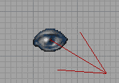

Camera Movement
You should be able to see four viewports when you first open UnrealEd.
Camera mode is the default toolbox mode. This allows you to move your view around the grid, and also move actors, depending on which mouse buttons and modiier keys you use. In all of the 2D views, there will be a camera actor visible:

|
This is a directional actor with a red arrow, indicating the position and view direction of the 3D viewport camera.
Moving the camera
Movement in the 2D views
Hold down the left or right button, then move the mouse in the direction you want to go. The left button moves the view more slowly than the right one. To zoom in and out, hold down both buttons, then move the mouse forward or backward.
Movement in the the 3D view
- The left button moves the camera forwards and backwards with corresponding movement of the mouse.
- Moving the mouse forward and back with the right button held will alter the pitch of the camera.
- Either button singly held will let you swing the camera left or right (yaw).
- Both buttons together control height of the camera (z-axis), and left-right movement.
- ALT and moving the mouse will dip left or right (roll).
The camera actor will change position in the 2D viewports in correspondence to your movements, but only when they refresh (click inside them to make this happen).
Moving actors
You can also move selected actors in this mode. Actor movement requires a keyboard modifier:
- CONTROL
- move just the selected actors
- SHIFT
- move the actors and the camera
- Left button, left & right: x-axis
- Right button, left & right: y-axis
- Both buttons, up & down: z-axis (same as camera movement above)
Other commands
- SHIFT + CONTROL + Click on a surface to select the associated brush. Note: if you have deleted this brush since rebuilding, UnrealEd will probably crash!
Related Topics
- UnrealEd Interface – full reference
- Mouse Control